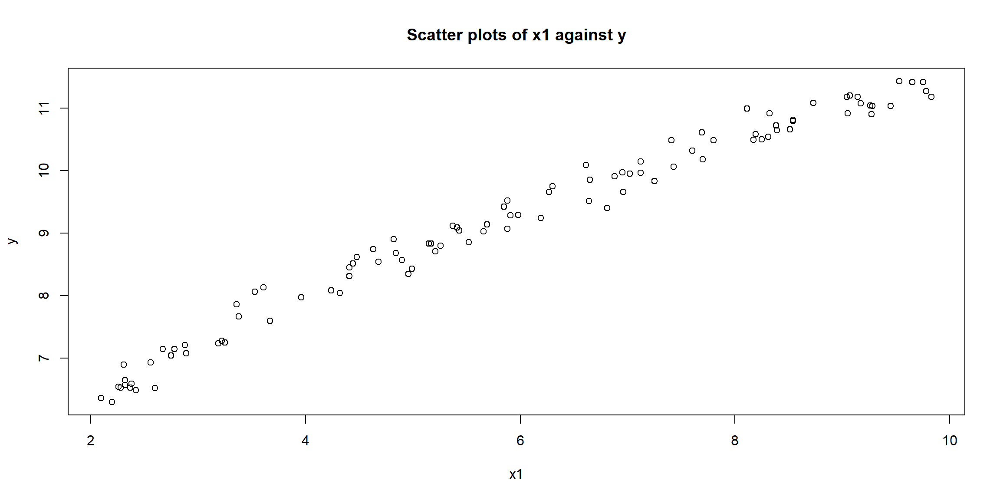
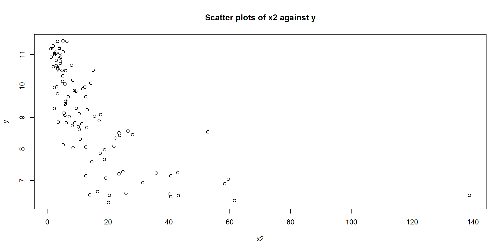
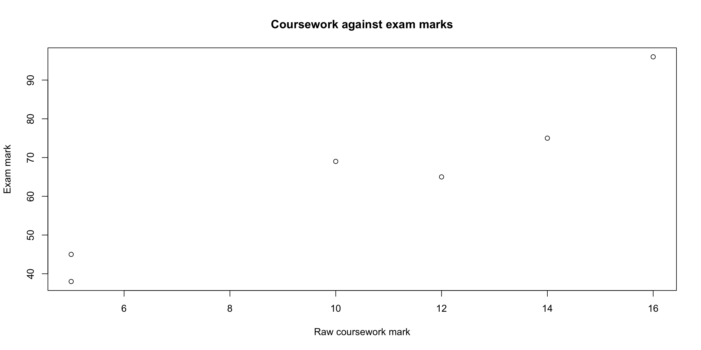
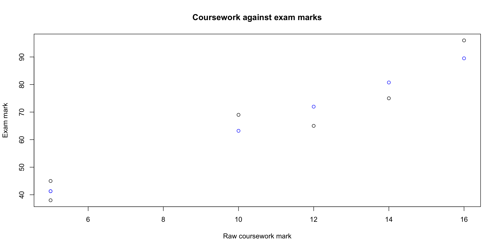
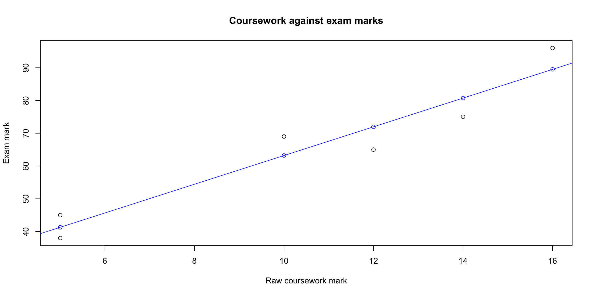

Download and load in the data.csv file. This contains 3 variables: x1, x2 and y.
Plot y against x1; plot y against x2. What do you notice about the relationships?
What does the design matrix of the following model look like? \[y_i = \beta_0 +\beta_1 x_{1i} + \beta_2 x_{2i} + \epsilon_i.\]
Fit this model in R, find the estimates of \(\beta_0\),\(\beta_1\) and \(\beta_2\) and interpret them.
Fit a new model, \[y_i = \gamma_0 +\gamma_1 x_{1i} + \gamma_2 x_{2i}^2 + \epsilon_i.\] How do the estimates of \(\gamma\) compare to the estimates of \(\beta\)?
coursework.csv task
Download and load in the coursework.csv` file. This is a dataset of the coursework marks, out of 20, and the exam marks, out of 100.
Create coursework and exam variables in R.
Plot exam against coursework with exam on the y axis.
For a simple linear regression model with exam as the response and coursework as the predictor variable.
According to the model, for each extra coursework mark, how many extra exam marks were obtained?
Using the ‘fitted’ command in R, calculate the fitted values of the model.
Use ?fitted to get more information about this command.
The ith fitted value is the value predicted by the model based on the ith observation.
Add the fitted line to the graph of exam against coursework.
Hint: use the abline function.
Create a new variable, coursework_percentage, that contains the coursework mark as a percentage.
Fit a new model with coursework_percentage as the predictor variable.
What effect does the rescaling of the coursework marks have on the fitted values and on the parameters?
Predict the exam score for a student that scored full marks in their coursework. Is there an issue with this prediction?
Answers to data.csv tasks
Code
```{r}###| Loading in filedata <- read.csv("~/Documents/GitHub/Warwick Statistics Society R Course 2024-2025/Data/data.csv")###| Plotplot(data$x1, data$y, xlab = "x1", ylab = "y", main = "Scatter plots of x1 against y")plot(data$x2, data$y, xlab = "x2", ylab = "y", main = "Scatter plots of x2 against y")```


From the 2 graphs, we observe that y increases as x1 increases but y decreases as x2 increases.
The design matrix for this model will be of the form:
```{r}###| Fitting the modelm1 <- lm(y ~ x1 + x2, data = data)m1```
Call:
lm(formula = y ~ x1 + x2, data = data)
Coefficients:
(Intercept) x1 x2
5.594377 0.614462 -0.004929
If \(x1 = 0\) and \(x2= 0\), we expect \(y=5.6\). Assuming \(x2\) remains constant, if \(x1\) increases by 1, we expect \(y\) to increase by 0.6. Assuming \(x1\) remains constant, if \(x1\) increases by 1, we expect \(y\) to decrease by 0.005.
Code
```{r}###| Fitting the second modelm2 <- lm(y ~ x1 + I(x2^2), data = data) # NOTE THAT WE NEED TO USE I()!m2```
Call:
lm(formula = y ~ x1 + I(x2^2), data = data)
Coefficients:
(Intercept) x1 I(x2^2)
5.439e+00 6.307e-01 -2.652e-05
If \(x1 = 0\) and \(x2= 0\), we expect \(y=5.4\). Assuming \(x2\) remains constant, if \(x1\) increases by 1, we expect \(y\) to increase by 0.6. Assuming \(x1\) remains constant, if \(x1\) increases by 1, we do not expect \(y\) to change (to 4 decimal places).
Answers to coursework.csv
Code
```{r}###| Loading in filecoursework.df <- read.csv("~/Documents/GitHub/Warwick Statistics Society R Course 2024-2025/Data/coursework.csv")###| Variable assigningcoursework <- coursework.df$cwexam <- coursework.df$exam###| Scatter plotplot(coursework,exam, xlab = "Raw coursework mark", ylab = "Exam mark", main = "Coursework against exam marks")```

From the scatter plot, we observe that a linear relationship between the raw coursework mark and the exam mark, where students who performed well in coursework also performed well on the exam and students who performed badly in the coursework also performed badly in the exam.
Code
```{r}###| Raw coursework modelm1 <- lm(exam ~ cw, data = coursework.df)m1```
For each extra mark obtained on the coursework, we expect the student to gain an extra \(4.4\%\) in the exam.
Code
```{r}###| Fitted valuesfitted <- fitted(m1)###| Adding fitted values as pointsplot(coursework,exam, xlab = "Raw coursework mark", ylab = "Exam mark", main = "Coursework against exam marks")points(coursework,fitted, col = "blue")###| Adding a line through the fitted pointsplot(coursework,exam, xlab = "Raw coursework mark", ylab = "Exam mark", main = "Coursework against exam marks")points(coursework,fitted, col = "blue")abline(a = m1$coefficients[1], b = m1$coefficients[2], col = "blue")```


Code
```{r}###| Coursework as a percentagecoursework.df$coursework_perc <- coursework/20m2 <- lm(exam ~ coursework_perc, data = coursework.df)m2fitted_perc <- fitted(m2)fitted_perc```
The fitted values and the intercept estimate are the same! However, the \(\beta\) estimate is now 87.66, \(20\times 4.383\).
If a student achieves \(100\%\) in their coursework, we expect them to achive \(19.38 + 87.66 = 107.04\%\) in the exam. This is a big problem as a student cannot achieve \(>100\%\)! It is very important to be careful when extrapolating as it is very easy to end up in unrealistic (or even impossible) situations.
Source Code
---title: "Check your understanding"format: html: fig-width: 12 fig-height: 6 code-fold: show code-tools: true code-block-bg: true code-block-border-left: "#31BAE9" toc: true code-copy: true number_sections: true echo: fenced---# `data.csv` taskDownload and load in the `data.csv` file. This contains 3 variables: x1, x2 and y.<div>- Plot y against x1; plot y against x2. What do you notice about the relationships?- What does the design matrix of the following model look like? $$y_i = \beta_0 +\beta_1 x_{1i} + \beta_2 x_{2i} + \epsilon_i.$$- Fit this model in R, find the estimates of $\beta_0$,$\beta_1$ and $\beta_2$ and interpret them.- Fit a new model, $$y_i = \gamma_0 +\gamma_1 x_{1i} + \gamma_2 x_{2i}^2 + \epsilon_i.$$ How do the estimates of $\gamma$ compare to the estimates of $\beta$?</div># `coursework.csv` taskDownload and load in the coursework.csv` file. This is a dataset of the coursework marks, out of 20, and the exam marks, out of 100.<div>- Create coursework and exam variables in R.- Plot exam against coursework with exam on the y axis.- For a simple linear regression model with exam as the response and coursework as the predictor variable.- According to the model, for each extra coursework mark, how many extra exam marks were obtained?- Using the 'fitted' command in R, calculate the fitted values of the model. - Use ?fitted to get more information about this command. - The ith fitted value is the value predicted by the model based on the ith observation.- Add the fitted line to the graph of exam against coursework. - Hint: use the abline function.- Create a new variable, coursework_percentage, that contains the coursework mark as a percentage.- Fit a new model with coursework_percentage as the predictor variable.- What effect does the rescaling of the coursework marks have on the fitted values and on the parameters?- Predict the exam score for a student that scored full marks in their coursework. Is there an issue with this prediction?</div># Answers to data.csv tasks```{r}###| Loading in filedata <-read.csv("~/Documents/GitHub/Warwick Statistics Society R Course 2024-2025/Data/data.csv")###| Plotplot(data$x1, data$y, xlab ="x1", ylab ="y", main ="Scatter plots of x1 against y")plot(data$x2, data$y, xlab ="x2", ylab ="y", main ="Scatter plots of x2 against y")```From the 2 graphs, we observe that y increases as x1 increases but y decreases as x2 increases.The design matrix for this model will be of the form: $$\begin{pmatrix} 1 & 2.37 & 20.41 \\ 1 & 8.38 & 4.34 \\ ... & ... & ... \end{pmatrix}.$$```{r}###| Fitting the modelm1 <-lm(y ~ x1 + x2, data = data)m1```If $x1 = 0$ and $x2= 0$, we expect $y=5.6$. Assuming $x2$ remains constant, if $x1$ increases by 1, we expect $y$ to increase by 0.6. Assuming $x1$ remains constant, if $x1$ increases by 1, we expect $y$ to decrease by 0.005.```{r}###| Fitting the second modelm2 <-lm(y ~ x1 +I(x2^2), data = data) # NOTE THAT WE NEED TO USE I()!m2```If $x1 = 0$ and $x2= 0$, we expect $y=5.4$. Assuming $x2$ remains constant, if $x1$ increases by 1, we expect $y$ to increase by 0.6. Assuming $x1$ remains constant, if $x1$ increases by 1, we do not expect $y$ to change (to 4 decimal places).# Answers to coursework.csv```{r}###| Loading in filecoursework.df <-read.csv("~/Documents/GitHub/Warwick Statistics Society R Course 2024-2025/Data/coursework.csv")###| Variable assigningcoursework <- coursework.df$cwexam <- coursework.df$exam###| Scatter plotplot(coursework,exam, xlab ="Raw coursework mark",ylab ="Exam mark", main ="Coursework against exam marks")```From the scatter plot, we observe that a linear relationship between the raw coursework mark and the exam mark, where students who performed well in coursework also performed well on the exam and students who performed badly in the coursework also performed badly in the exam.```{r}###| Raw coursework modelm1 <-lm(exam ~ cw, data = coursework.df)m1```For each extra mark obtained on the coursework, we expect the student to gain an extra $4.4\%$ in the exam.```{r}###| Fitted valuesfitted <-fitted(m1)###| Adding fitted values as pointsplot(coursework,exam, xlab ="Raw coursework mark",ylab ="Exam mark", main ="Coursework against exam marks")points(coursework,fitted, col ="blue")###| Adding a line through the fitted pointsplot(coursework,exam, xlab ="Raw coursework mark",ylab ="Exam mark", main ="Coursework against exam marks")points(coursework,fitted, col ="blue")abline(a = m1$coefficients[1], b = m1$coefficients[2], col ="blue")``````{r}###| Coursework as a percentagecoursework.df$coursework_perc <- coursework/20m2 <-lm(exam ~ coursework_perc, data = coursework.df)m2fitted_perc <-fitted(m2)fitted_perc```The fitted values and the intercept estimate are the same! However, the $\beta$ estimate is now 87.66, $20\times 4.383$.If a student achieves $100\%$ in their coursework, we expect them to achive $19.38 + 87.66 = 107.04\%$ in the exam. This is a big problem as a student cannot achieve $>100\%$! It is very important to be careful when extrapolating as it is very easy to end up in unrealistic (or even impossible) situations.